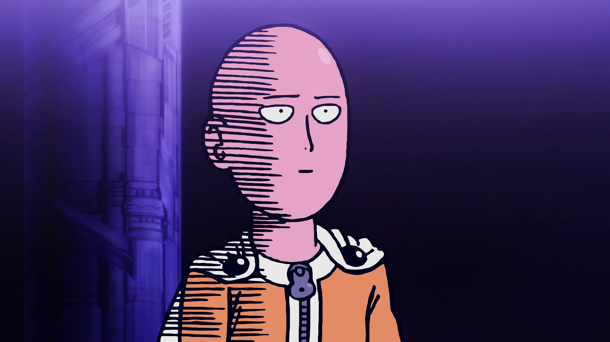
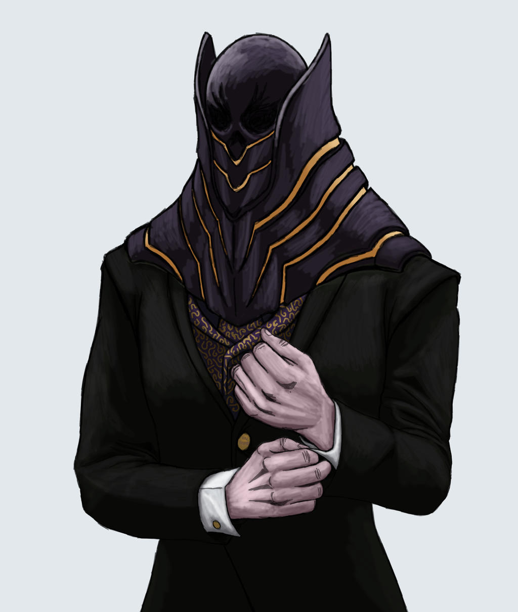

L e h e r o / v i l a i n l e p l u s f o r t d a n s l e s a n i m é s
Il s'agit de Saitama dans One punch man.
Pour commencer Saitama malgrès sa force et sa vitesse surhumaine, il n'a pas de pouvoir ou de capacité spéciale comme The World de Dio Brando (jojo bizzare adventure) ou de transformation comme Son Goku. Saitama tue tout les monstres en un coups de poing que se soit de monstre qui ont une taille titanesque comme le Elder Centipède (saison deux). Il y a pour l'instant un seul monstre qui a pu survivre à une attaque de Saitama, c'est Boros (saison un). Boros est un grand conquerent galactique auquel il passe son temps à conquérir des planètes pour le plaisir et pour avoir enfin quelqu'un qui peut rivaliser avec lui. Saitama a avoué après son combat contre Boros qu'il serais l'ennemi le plus puissant qu'il a combattu jusqu'a présent. Le secret de la force de Saitama est le fait qu'il a passer plus de trois ans à s'entrainer sans relache jusqu'à mettre son corps à de rude épreuve.
L'image ci-dessous vous envoie sur le site officiel de Saitama
Tout d'abord, il y a aucun Vilain qui est considérer comme le plus fort, ils sont tous fort mais à leurs manières. Mon avis pour moi est All For One car
All For One est le méchant le plus puissant de My Hero Acadamia. Le Pouvoir D'All For One consiste à voler tous les
des autres personnes pour qu'il puisse les additionner au sien. A son Prime, All For One avait mis le japon à Genoux et il à pu conquérir le monde mais sauf qu'il y avait un seul pouvoir auquel All for one n'a pas pu avoir, c'est le
Malgrès ça puissant All for one n'a pas pu obtenir le One for all car a chaque fois il attaquait l'ancien détenteur du One For All dont il a tuer presque tout ses détenteur sauf all might et izuku midoriya. All For One avait "entrainer" son disciple et il a trouver un moyen de faire souffrir all might en formant Tomura shigaraki. A cause D'All for One, All might a perdu le One For All qui était en lui durant le combat de la Saison 3. All For One est le personnage le plus vieux de l'animé (Grâce a l'alter de son scientifique dont le créateur de brainless, kyudai Garaki.Le pouvoir d'All For One est qu'il puissent voler les alters d'autre personne et que ces altrers devien les siens. All For One serais mis Au Tartare (la prision la plus sécuriser de my hero Acadamia) A la Saison trois par All might dont il a été endommager mais trois Saison plus tard Tomura Shigaraki (mais il était controller par all for one). Ensuite All For One continua a prendre des alters mais on ne sait pas plus sur la saison sept a part que All For One seras de retour contre Izuku Midoriya.
L'image ci-dessous vous enverras sur le site officiel d'All For One

Qui est All for One